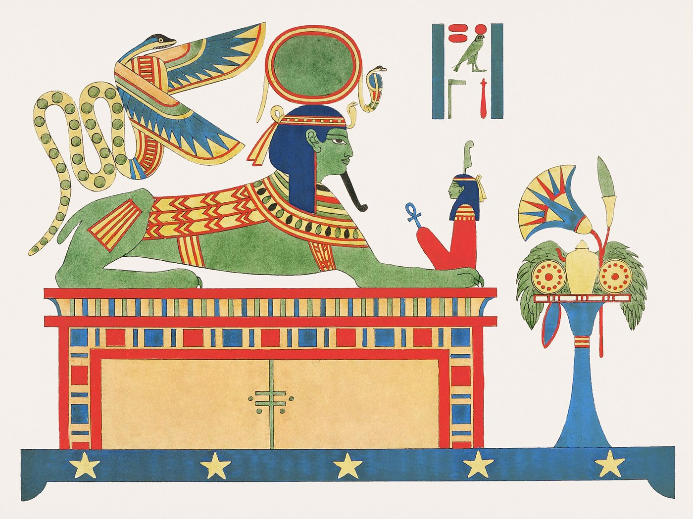
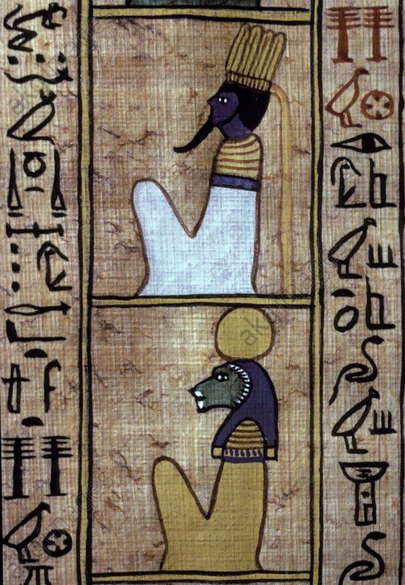
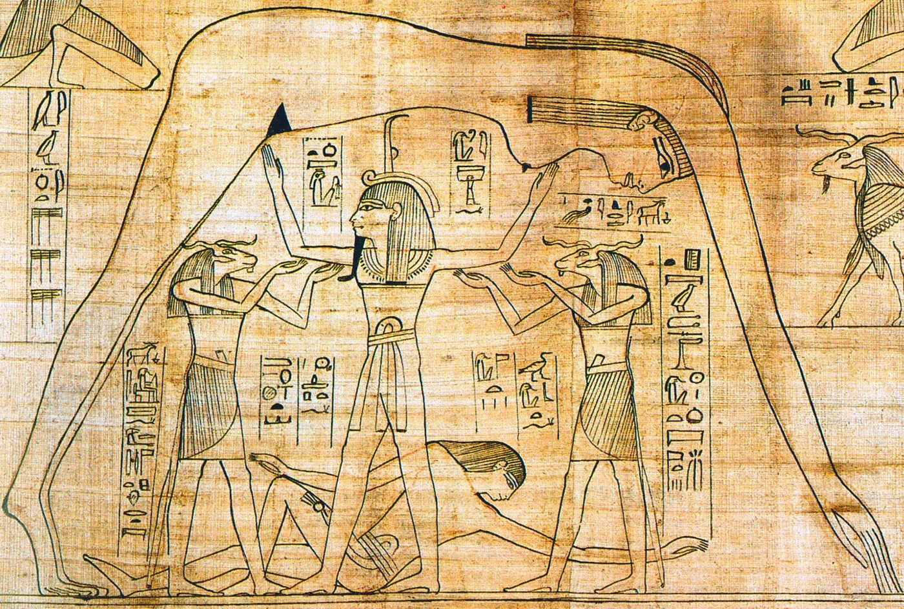
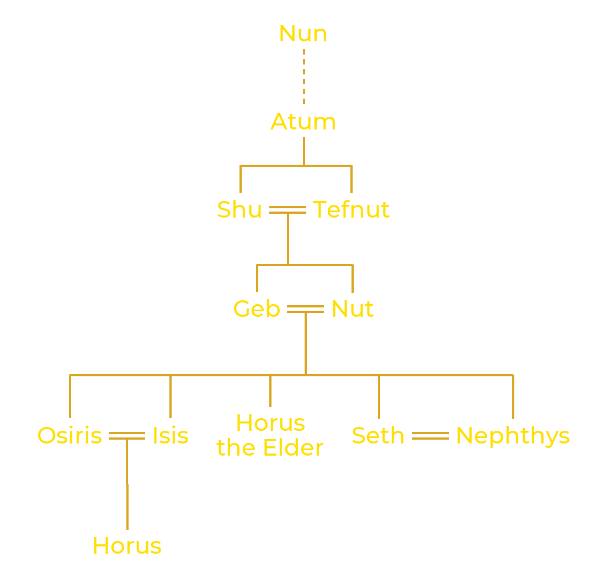
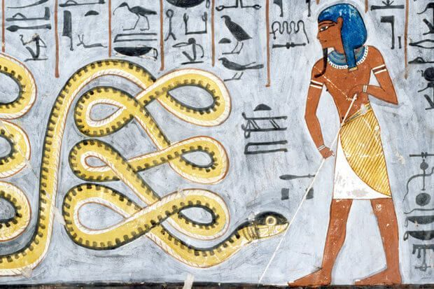

Am Anbeginn gab es nur einen Urozean namens Nun, Dunkelheit herrschte, und nichts existierte.
Aus diesem Urozean ging Atum oder Tem hervor („Der Vollständige", „Der, der die Gesamtheit
ist", „Der, der ist und nicht ist"), der erste der Götter, der sich
selbst das Leben schenkte, indem er sich seiner Existenz bewusst wurde. Der Gott stellte
sich sodann einen Erdhügel vor, den
Benben, in der Mitte des Wassers, und dieser erschien, damit er dort landen konnte. Atum hat keinen Partner, daher
vereinigt er sich mit sich selbst durch Selbstbefruchtung, und aus dieser Handlung gehen zwei Kinder hervor: ein Sohn Schu ("Lebensatem" und Gott der trockenen Luft)
und eine Tochter Tefnut (die Göttin der feuchten Luft). 
Diese Geburt hat beträchtliche Folgen,
denn Schu ist das Leben, das heißt, er ist das Leben an sich und zugleich das Licht. Tefnut ist die
erste Göttin, das erste weibliche Wesen der Schöpfung. Sie ist die Gemahlin ihres Bruders Schu. Sie verkörpert
die Wärme der Sonne und ist eine Personifikation der Maat. Maat erscheint sehr früh, sobald der Schöpfer sich
seiner selbst bewusst wird und die himmlische Mechanik in Gang setzt. Maat ist eine metaphysische Wesenheit, die die Ordnung regiert. Maat ist
die Ordnung, die das Gleichgewicht zwischen Gut und Böse aufrechterhält und das Chaos in Schach hält. Für die Ägypter sind Gut
und Böse untrennbar miteinander verbunden, das eine kann ohne das andere nicht bestehen und gedeihen.
Aus der Verbindung von Schu und Tefnut wurden zwei Kinder geboren: Geb, die Erde, und Nut, der Himmel. Aus Atum sollte die
Sonne hervorgehen, die später zu Re, dem Sonnengott, werden würde, doch diese konnte sich nicht auf normale Weise bewegen. Um
das Gleichgewicht und die kosmische Ordnung zu gewährleisten, befahl Atum daher Schu, Erde (Geb) und Himmel (Nut) voneinander getrennt zu halten:
So entstand das Universum, und nach und nach wurde der Nun an den Rand der neu entstehenden Welt verdrängt.

Der Schöpfergott Atum ist es, der den Menschen das Leben gab, so wie er es den ersten Göttern gab. Der Mensch erscheint nicht allein auf der Erde. Die Sargtexte (Totentexte des Mittleren Reiches, 2000-1780 v. Chr.) sprechen mehrfach von dieser Schöpfung, insbesondere in dieser kurzen Passage: „Die Menschen sind die Tränen meines Auges". Einer der verbreitetsten Berichte über die Erschaffung des Menschen besagt, dass die Menschen aus den Tränen des Auges des Schöpfergottes geboren wurden und Schu ihnen den Lebensatem einhauchte.
Eine der Folgen des Erscheinens der Sonne und des Himmels ist der 360-tägige Sonnenlauf des Re und die Entstehung von Tag
und Nacht. Doch bekanntlich hat ein Jahr 365 Tage. Es bleiben also 5 Tage übrig. Diese letzten Tage
sind Teil der Schöpfung. Die schwangere Nut konnte nämlich während des gewöhnlichen Sonnenlaufs nicht gebären,
man musste also eine List finden. Der Legende nach spielte Thot daraufhin gegen den Mond und gewann, wodurch
die fünf zusätzlichen Tage entstanden, die es Nut ermöglichten, unbesorgt zu gebären. 
Diese letzten fünf Tage werden „Epagomenen" genannt. Der Begriff stammt vom griechischen epagomena hemera, was „zusätzlicher
Tag" bedeutet. In der ägyptischen Kosmogonie werden diese Tage mit den „Kindern der Nut" gleichgesetzt, fünf an der Zahl:
Isis, Osiris, Seth, Nephthys und Horus der Ältere (nicht zu verwechseln mit Horus, dem Sohn von Isis und Osiris). Diese fünf Gottheiten
sollten den Menschen Übeltaten offenbaren. So wurde am ersten Tag Osiris geboren, am zweiten Tag Horus der Ältere, dann Seth,
am vierten Isis und schließlich am letzten Tag Nephthys. Diese Tage waren bei den Ägyptern nicht gut angesehen, insbesondere
der dritte, der des Seth.
Sie ist eine Gruppe von neun göttlichen Wesenheiten, die sich die Theologen von Heliopolis ausdachten und die die für die Erschaffung der geordneten Welt notwendigen Kräfte symbolisieren: der Schöpfergott Atum, seine Kinder Schu und Tefnut, seine Enkel Geb und Nut sowie deren Nachkommen mit Ausnahme von Horus dem Älteren: die beiden Paare Isis und Osiris, Nephthys und Seth.
Als der Schöpfer sich seiner selbst bewusst wurde, erinnern wir uns, dass der Nun bereits alle für die Schöpfung notwendigen
Zutaten enthielt. Doch um seine Aufgabe zu vollbringen, ist Atum nicht allein; Schlangen werden ihm helfen, doch diese Wesen sind gefährlich, sobald die Welt existiert
denn sie gehören dem Nun an, dem Chaos, das die kosmische Ordnung bedroht. Und wenn Re, die Sonne, den Taghimmel verlässt, um
in die Dunkelheit der Nacht einzutreten, muss er auf seiner Sonnenbarke eine zwölfstündige Reise zurücklegen, bevor er bei Tagesanbruch wiedergeboren wird. Einer der Feinde der Sonne ist die
riesige Schlange Apophis, geboren im Herzen des Nun. Unerschaffen wie Atum, kann Apophis nicht vernichtet werden. Er kann nur unschädlich gemacht werden.
